Pro Git
Table of Contents
- if you want go back? home
*-----–— 작성자: FregeHoly 작성일: 작성장소: Jeju 날씨: cloudy ------–—*
1 Getting Started
1.1 About Version Control
Local VCS
version control: 시간에 따른 파일의 변경사항을 기록하는 system. version: software는 시간에 따라 파일이 변경되거나, 파일의 집합이 변경되는데, 시간에 따른 software의 구성을 version이라고 한다.
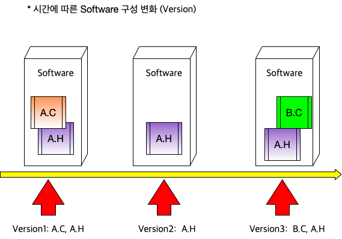
이런 vcs은 그냥 timestamp 디렉토리를 만들고 파일을 만들거나 변경하는 식으로
만드는 것을 떠올릴 수 있다. 그런데 이렇게 하면 복잡해진다. timestamp로 구분
하기도 쉽지 않고, 관리가 힘들다.
해결책으로 local computer에서 database를 사용한다. 이렇게 local database를
이용하는 프로그램으로 유명한게 RCS다.
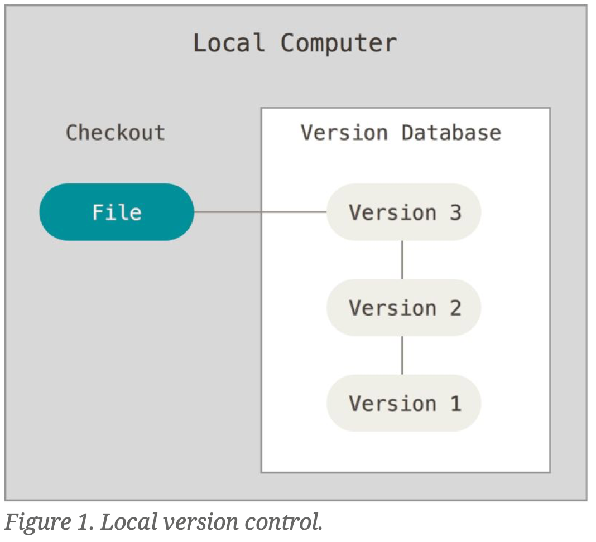
Central Version Control System
Local system에 database로 관리하는 것은 여러사람이 공동작업을 할 수 없다. 그래서 공동작업을 위해 중앙 서버에 database를 관리하는데, 이것을 CVS라고 한다.
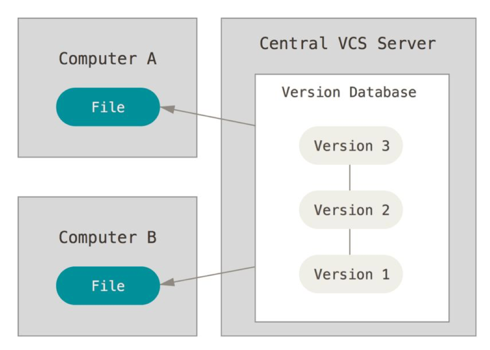
Distributed Version Control System
CVS의 server가 문제가 생기면 모든 이력이 날라간다. hdd가 문제가 있거나, 네 트웍이 문제가 있어도 안되는 것이다. 그래서 그 대안으로 server의 db를 local에도 유지하는 방식을 사용한다. 이것을 DVCS라고 한다.
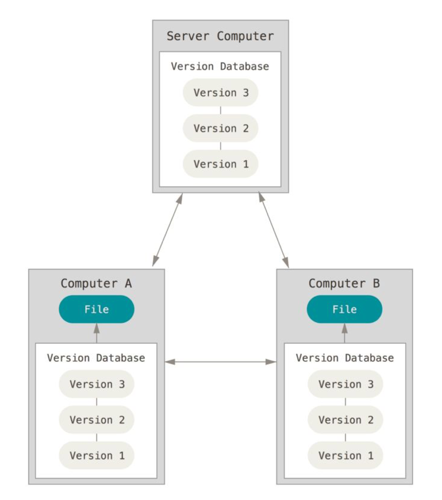
1.2 Git Basics
snapshots
기존 system은 파일의 변경사항을 version으로 저장해서 관리한다. 즉 delta가 생기면, delta를 모아서 version으로 만든다. version1에서 File A,File C가 변경되고 이를 version으로 만들면 그 delta가 저장된다.
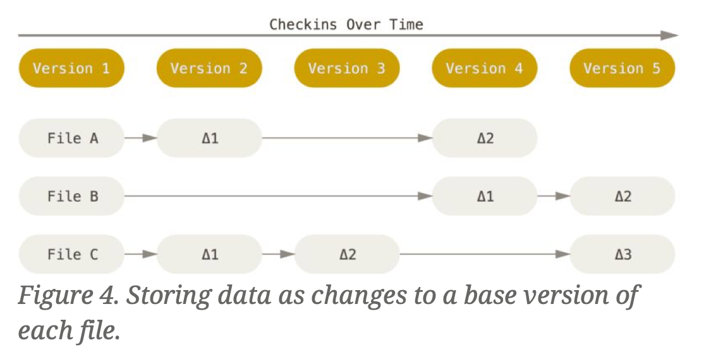
git은 관리하는 version을 snapshot으로 관리한다. 즉 version이 snapshot이다. 파일의 변경이 있으면 관리하는 모든 file들을 snapshot으로 저장한다. 기존의 file에 변경사항이 없다면 ㅣink로 대체한다. 이것이 git이 기존 시스템과의 근본적인 차이다. 아래 그림을 보면, 점선은 delta가 없기 때문에 link로 연결된 파일이다.
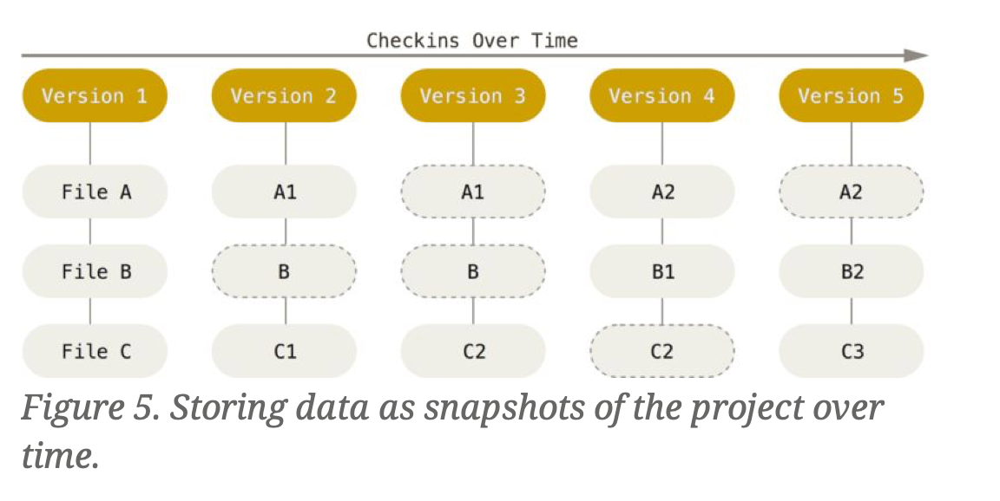
Nearly Every Operation is local
Git은 대부분의 local에서 작업을 한다. local에 db가 있기 때문이다.
Git Has Integrity
git은 version이나 file들을 server와 주고받는 일을 많이 하는데, 이렇게 주고 받는 data가 올바른지 확인(check)하는 과정이 필요하다. server에서 A라는 파일을 받았는데, 이게 손실이 있는지 아닌지를 파악해야 한다는 것이다. 이것을 checksum이라고 부른다. 이 checksum을 하는 방식을 git에서는 SHA1이라는 hash값을 사용한다.
sha-1 hash는 이렇게 생겼다. 40 characters. 24b9da6552252987aa493b52f8696cd6d3b00373
The three states
중요한 내용이다. git으로 관리되는 file은 3가지 상태가 있다.
Commited: Committed means that the data is safely stored in your local database. Modified: Modified means that you have changed the file but have not committed it to your database yet. Staged: Staged means that you have marked a modified file in its current version to go into your next commit snapshot.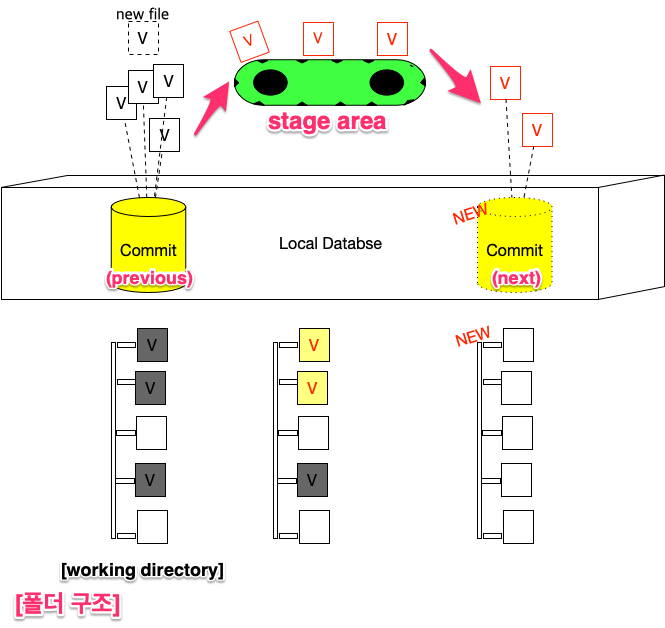
[전반적인 설명]
우리는 git을 설치한 폴더를 working directory라고 한다. 해당 directory에서 새로운 folder와 file을 생성하고 stage에 올린 다음 commit을 하면 commit은 .git 이라는 git directory에 저장된다. .git 디렉토리가 local db를 가지고 있는 directory로 보면된다. 예를 들면, photoshop을 사용해서 그림을 그리는데 그리다가 일이 있으면 우리는 중단하고 save한다. save한것이 .git폴더의 db안에 저장한다고 보면된다. 일을 끝마치고 다시 그림을 그리고 또 save한다. 그런데 그림을 잘못 그렸다. 수정한게 너무 많을땐 옛날에 저장한 그림을 다시 불러 오면 된다. 이것이 checkout이다. 그런데 db에 저장하는 과정이 조금 복잡하긴 하다. 이 설명도 부족하다면 아래 그림을 보자.
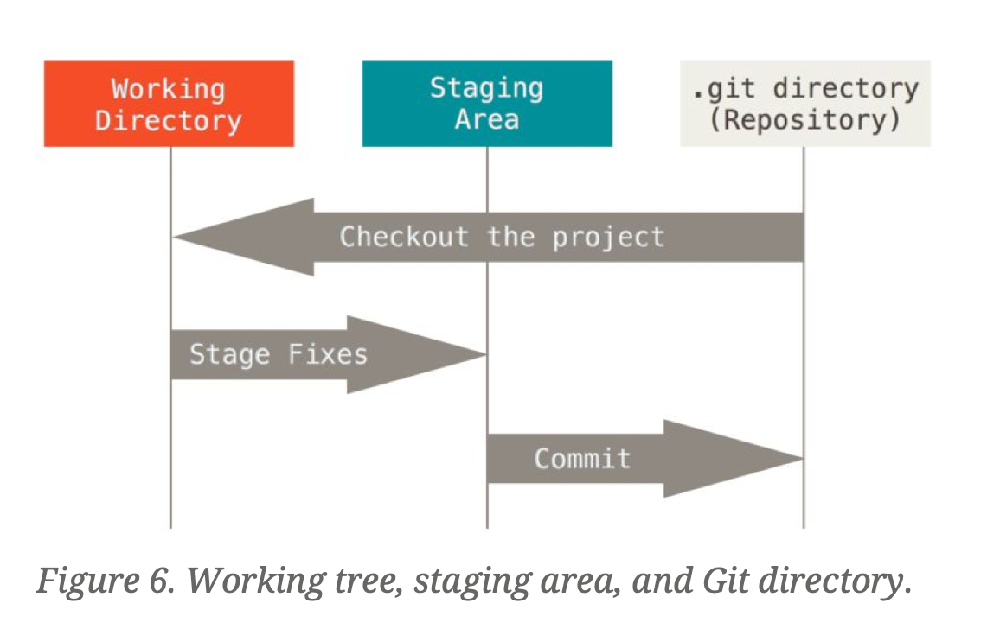 save한 모든게 .git에 있다는게 중요하다. .git만 있다면 모든 save된것을 꺼내서 작업하면 된다. 다른 컴퓨터나 다른 폴더에 .git을 복사하면 된다는 얘기다. 그럼 지금까지 저장한 모든 포토샵 그림을 꺼낼수 있다. 이것을 clone한다고 말한다. working directory는 save된 포토샵 그림을 복원했을때 그림이라고 봐도 된다.
[stage에 대하여]
photoshop비유를 다시 하면 commit은 저장된 그림으로 볼 수 있다. git이 포토샵의 저장 시스템과 다른 것의 하나가 stage area다. 우리는 저장된 그림을 불러와서 다시 수정하고 저장할 수 있는데, 수정한 내용중에 저장할 내용을 선택할 수 있다. 즉 선택된 내용만 db에 저장된다고 보면 된다. 이게 좀 특이하긴 하다. 여튼 바로 저장하지 않고 수정한 것중 선택한것만 저장하겠다고 하는 건데… 그 선택한 내용을 모아서 파일로 저장되고, 그것을 부를때 stage area라고 부르는데 이것은 그냥 file이다. 그리고 index라고 부르기도 한다.
[git workflow]
위에서 말한 포토샵의 비유를 좀 더 정제된 용어로 정리하면 다음과 같다.
- You modify files in your working tree.
- You selectively stage just those changes you want to be part of your next commit, which adds only those changes to the staging area.
- You do a commit, which takes the files as they are in the staging area and stores that snapshot permanently to your Git directory.
The Command Line
git을 사용하는 여러방법이 있다. GUI방법이 많은데, 모든 기능이 있는게 아니다. command line은 모든 기능이 있다. 그래서 command line을 사용한다. GUI는 금방 배울수 있다. command line에서 할수 있다면…
1.3 Installing git
git을 설치해야 사용할 수 있다. 설치는 알아서 하고, 이책에선 2.8버전의 git 을 사용하는데, 하위호환성이 아주 잘되어 있다고 한다.
1.4 First-Time Git Setup
git을 설치했으면 git 환경을 설정해야 한다. git config로 할 수 있다. 환경은 변수로 구성되어 있기 때문에 git config로 변수를 설정한다. 이렇게 설정한 변수는 3곳에 저장된다. git 환경변수는 3곳에 저장되는 이유는 각각의 변수의 scope라고 봐도 된다. 첫번째 파일에 저장된 변수는 local system의 모든 사용자, 모든 git에 영향을 미치는 변수다. 두번째 파일은 개인 설정 환경변수로 보면된다. 세번째는
1. /etc/ gitconfig file: 2. ~/.gitconfig or ~/.config/git/config file: 3..git/ config
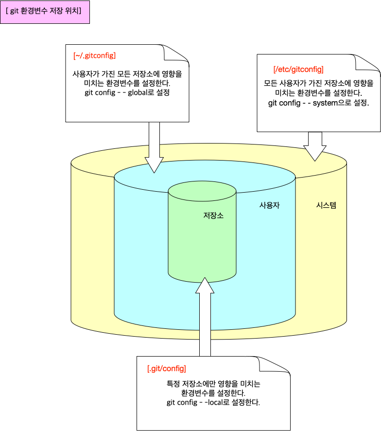 여기서 중요한것은 환경변수의 우선순위가 있다는것이다. 다른 말로 변수가 overwrite될수 있다는 건데, A라는 변수가 시스템,사용자,저장소에 모두 설정 될때 최종적으로는 저장소의 값이 overwrite되게 된다. 우선순위가 높다고 할 수 있다.
Your Identity [setting1]
git을 설치한후 제일 먼저 할것은 git의 username과 email address를 설정하는 것이다. 이것은 매우 중요한데, commit이 이 정보를 사용하기 때문이다.
$ git config --global user.name "John Doe"
$ git config --global user.email johndoe@ example.com
Your Editor [setting2]
commit할때 message를 남겨야 하기 때문에 editor설정이 필요하다. emacs를 에디터로 설정하려면 아래와 같이 한다.
$ git config --global core.editor emacs
Checking your settings
설정된 모든 환경변수를 보여준다. system에 저장된 변수, user에게 저장된 변수, 저장소에 설정된 변수, 모든 변수를 확인 할 수 있다.
$ git config --list
특정 변수값도 볼 수 있는데, 다음과 같이 하면 된다.
$git config user.name
변수를 key라고도 부르는데, key가 좀 더 정확한 말이다. 변수는 그냥 수이다. 그런데 user.name은 변수가 아닌 문자열이다. 그래서 key,value로 이해하는 게 맞다. 또한 git config –list로 확인되는 변수는 3곳의 저장된 파일에서 key,value를 가져오기 때문에 overwrite된 값을 보여준다. 또한 key value쌍이 많기 때문에 뭔가 잘못되었어도 잘 알수가 없기 때문에 다음과 같은 명령을 통해 본래 default값 을 보여주는 명령어도 있다.
$git config --show-origin rerere.autoUpdate
Getting Help
git의 도움말은 git help <verb> 형식으로 볼 수 있다.
git help config
도움말은 offline에서도 볼 수 있다. 반드시 인터넷에 연결될 필요 없이 작업을 할 수 있게 도와준다.
git help 명령어를 통해 도움말을 볼 수도 있지만, 아래와 같이 간단하게 볼 수도 있다.
git config -h
2 Git Basics
이 책에서 오직 한개의 chapter만 읽어야 한다면 이 chapter는 꼭 읽어라!
2.1 Getting a Git Repository
git의 기초를 말할려면 우선 git 저장소에 대해 얘기해야 한다. 저장소가 먼저 있어야 한다. 저장소를 얻는? 방법은 2가지가 있다. 저장소를 만들거나, 혹은 있는 저장소를 복사하는 것이다. 복사하는 것은 clone이라고 부른다.
Initializing a Repository in an Existing Directory.
저장소가 없는경우, 우선 Project폴더를 만든다. 이미 있다면 그쪽으로 이동한다. 그리고 저장소를 만든다. 저장소를 만든다는 것은 version관리를 하겠다는 말이다. 포토샵으로 비유하면, 포토샵을 저장할 폴더를 설정하는 것이다. 다음과 같이 하자.
$git init
이렇게 하면 포토샵을 저장할 폴더가 설정된다. 그 폴더의 이름은 .git이다. 이제 우리가 save하면 그림파일은 .git에 저장된다고 보면 된다. 이제 저장을 해보자.
$ git add *.c
$ git add LICENSE
$ git commit -m 'Initial Project Version'
이렇게 하면 .git이란 저장폴더에 저장이된다.
Cloning an Existing Repository
이제 다른 사람이 만든 저작물을 가져오는 경우를 생각하자. 다른 사람이 만든 project를 가져오는 것은 clone을 사용한다고 했다. 포토샵을 예로 들면, 다른 사람이 스케치만 작업했고 난 채색을 하는 경우다. 그러면 다른 사람이 작업한 saved된 것을 가져와서 거기에서 추가작업을 한다고 생각하면 된다.
책에서는 clone과 checkout을 혼동하지 말라고 한다. checkout은 가장 최근에 작업한 파일을 복원하는 것과 같다. 즉 스케치한 사람의 최근 작업물만 가져온다고 보면 된다. 그런데 우리는 clone을 한다. 이것은 모든 작업물을 가져오는 것이다. 예를 들어,그림그리기 협업을 하는데, 스케치를 처음 시작했을때 부터 그사람이 스케치를 완성했을때까지의 부분 작업물을 다 볼 수 있게 clone을 해야 한다고 한다. 이말은 만일 스케치를 그린 사람의 hdd가 부셔졌다면, 공동으로 그림을 저장하는 폴더가 server에서 문제가 되서 꺼내지 못하는 상황이라면 문제가 되기 때문이다. 그래서 clone을 통해서 통째로 가져온다.
clone하는 방식은 공유하는 저장폴더가 보통은 특정 server에 연결되어 있기 때문에, 그 위치는 URL로 표시되는 경우가 많다.
$ git clone https://github.com/libgit2/libgit2
이렇게 하면 libgit2라는 폴더가 만들어지고, 안에는 저장하는 폴더 .git이 설치된다. 만일 나는 libgit2가 아닌 mylibgit으로 하겠다고 하면 다음과 같이 하면 된다.
$ git clone https://github.com/libgit2/libgit2 mylibgit
Recording Changes to the Repository
이번 장에서 설명하는 것은 용어인데 tracked/untracked라는 용어가 나온다. 솔직히 용어가 중요하진 않다. 이해만 하면 된다. 우리가 다른사람이 스케치한 history를 가진 저장폴더를 가져왔다고 가정하자. 그러면 작업화면에는 checkout(꺼낸)한 스케치그림이 보일 것이다. 그 그림에서 우리는 작업을 하는데, 색깔을 넣을 수도 있고, 기존 스케치를 수정할 수도 있다. 기존에 있는 스케치를 수정하는 것은(이전 commit에 있던 file로 이해하면 된다.) modified했다고 말한다. 기존 commit에 있는 file을 tracked file 이라고 부르고, 이를 수정하면 modified라고 한다. 만일 수정되지 않은 그대로의 file 이라면 unmodified file이라고 말할 수 있다. 반면에 스케치에 없던 채색을 한다는 것은 새로운것이다. 그래서 untracked file이라고 말한다. 용어는 git을 사용하는 데 자주 나오는 용어라서 알아는 둬야 한다. 다음 그림은 책에 있는 그림이다. 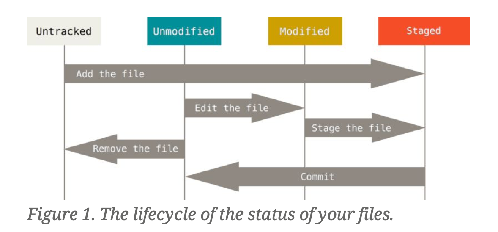
Checking the status of your files
git은 save와 관련된 일을 하는 tool이다. 이 tool은 포토샵이나 여타 application 에서 하는 save기능보다 훨씬 복잡하다. 포토샵에선 save만 하면 되지만, git으로 save하는 것은 모든 상태를 점검해서 최종적으로 commit의 형태로 저장한다. git은 현재 폴더에 있는 파일들이 기존의 저장된 파일에서 뭐가 달라졌는지, 비교를 한다. 만일, 달라진게 있다면 어떤게 달라졌고, 당신이 지금 저장할 것이라고 선택한것(staged files) 은 무엇이고, 또 어디에다 저장할 것인가?(branching) 이런 정보를 늘 가지고 있다. 그런 정보를 바탕으로 관리하는게 git이다. 저장은 인간이 한다. git은 정보를 보여 주고 인간이 판단을 하는 것이다. 실행은 git의 도움을 받지만, 어쨋든 우리가 판단을 해야 하는데, 판단의 대한 정보를 git으로 얻는다. 이런 정보를 얻는 명령어가 있다. git status인데, 여기선 clone해서 가져온 저장소에서 아무런 수정없이 git status 를 수행 했을때 결과를 보여준다. [clone해서 git status]
$ git status On branch master Your branch is up-to-date with 'origin/ master'. Your branch is up-to-date with 'origin/ master'. nothing to commit, working directory clean
git status를 하면 git이 가진 정보가 나온다. 1,2줄은 branching에서 자세히 설명을 한다고 한다. 간단히 설명하면 save에서 저장된는 파일은 .git폴더에 저장되는데, 저장폴더가 하나만 있는게 아니다. 저장폴더 안에는 subfolder가 있어서 다른 폴더에 저장할수 있다. 그런 subfolder의 이름을 branch라고 생각하면 된다. origin/master는 원격에 있는 master라는 sub folder와 내가 가진 저장폴더(master)와 내용이 같다. 즉 동기화되어 있다는 뜻이다. nothing to commit이란 말은 commit해야 할것들(staging된 file)이 없다는 것이다. working directory clean의 의미는 이전에 저장된 commit에서 달라진게 없다는 뜻이다. 스케치한 저장폴더를 가져와서 최종 스케치화면을 작업화면에 가져왔지만, 아직 수정한게 없기 때문에 이런 메시지를 볼 수 있다. [새로운 파일을 생성해 보자]
$ echo 'My Project' > README
$ git status On branch master Your branch is up-to-date with 'origin/master'. untracked files: (use "git add <file>..." to include in what will be committed) README nothing added to commit but untracked files present(use "git add" to track)
위에서 보듯이 README파일은 새로 만든 파일이다. 따라서 untracked file이다. 기존 스케치에 없던거다. 기존 commit에 없는 파일이다.
Tracking New Files
이 새로 만든 file을 git add하면 tracking이 시작된다고 보면 된다는데 tracking 이란 단어에 집착할 필요는 없다. 그냥 stage에 올려논다고 생각하면 된다. 실행화면을 보자.
$ git add README
그러고 난 후 git status를 해보자.
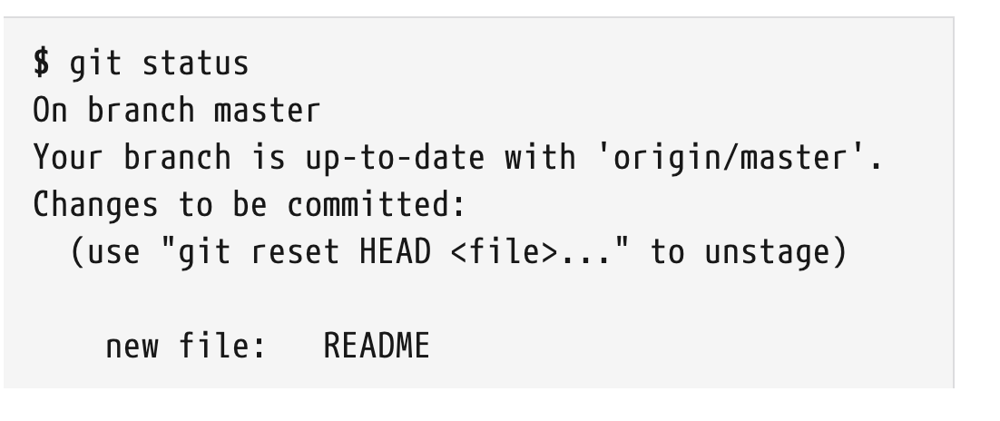
README가 stage에 올라갔다. 그것을 git입장에선 tracked file이 새로 생겼다. 라고 해서 new file이란 메시지가 나온다. 그런 용어가 중요한건 아닌데, 용어의 속 뜻을 이해하면 git을 사용하기 편한건 사실이다. 그냥 stage에 올라갔다고 생각하면 된다.
Staging Modified files
untracked된 파일, 그러니까 기존에 없던 파일,스케치에 없던 채색을 하고 stage에 올리는 것을 봤다. 그러면 이번엔 tracked file을 stage에 올리는 것을 보여준다. 포토샵으로 비유하면 스케치를 수정하는 것이다. CONTRIBUTING.md라는 파일은 기존에 저장되었던 파일이다. 이 파일을 수정했다. 이제 git status로 상태를 보자.
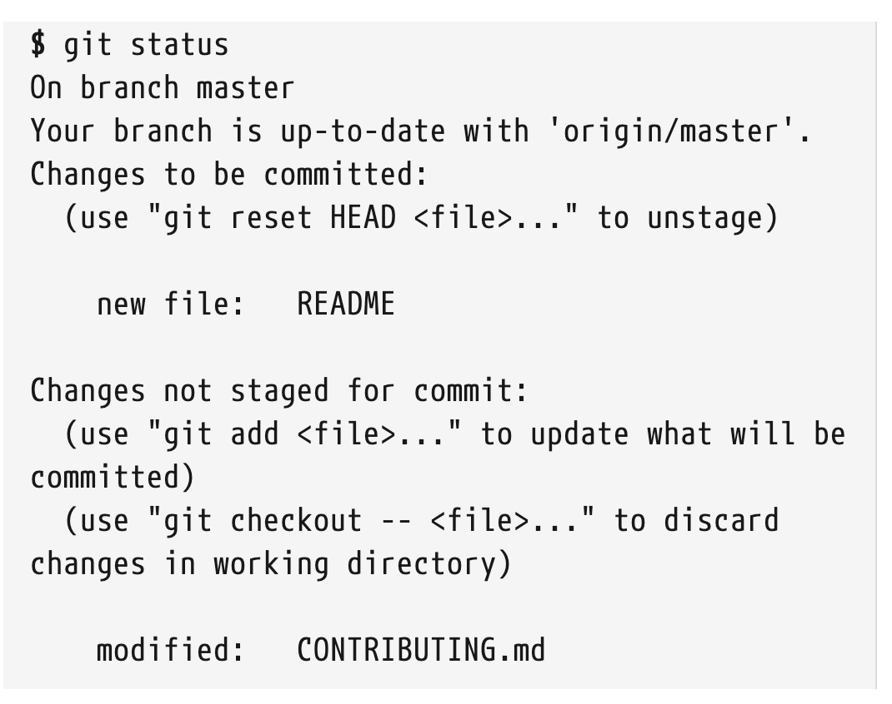
Modified란 단어가 보이는가?
그렇다. tracked된 파일을 수정하면 modified라고 보이게 된다. 여기서 stagin을 하려면 git add 명령어가 필요하다.
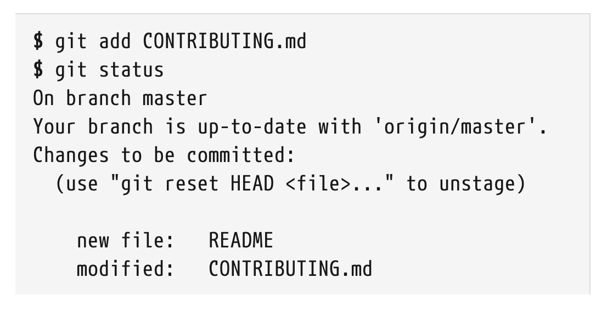
아래 부분을 보면, stage에 올려져 있는 파일을 볼 수 있다. 이제 여기서 commit만 하면 된다. 그런데 여기서 재미있는 test를 해보자.
[재미있는 test]
stage에 올려진 파일을 수정하는 것이다. 어떻게 될까?
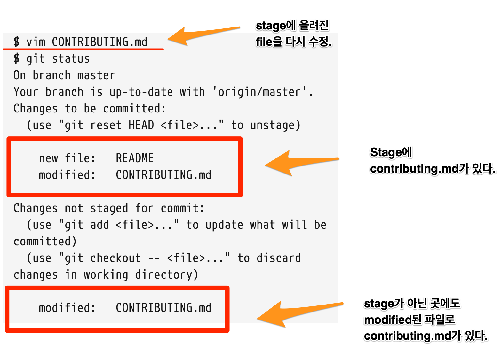
보는 대로 stage에 contributing.md파일을 볼수 있고, unstage영역에서 contributing.md파일을 볼 수 있다. 두 파일은 어떻게 다르고 어떻게 처리 되는가?
설명은 간단하다. staging에 올라간 파일은 이전에 수정된 파일이고, modified된 파일은 이번에 수정한 파일이다. stage에 올라간 파일을 commit하면 이전에 수정된 내용이 저장되는 것이고 이번에 수정한 파일은 다시 stage에 올리고 commit을 해서 새로운 commit으로 저장하면 되는 것이다.
이런경우는 나중에 수정된 modified파일을 다시 git add로 올리면 된다.
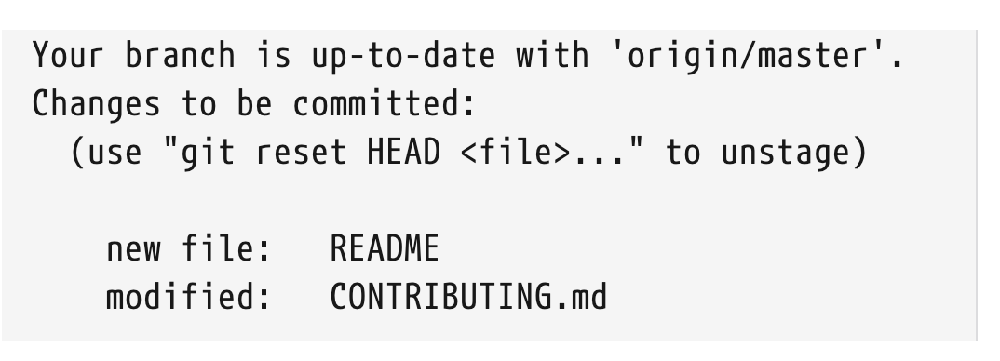
이미지가 좀 깨졌는데, 여튼 다시 staging영역에 올라간 것을 볼 수 있다.
Short Status
status 정보를 좀 더 간단히 보여줄 수 있다.
git status -s(short)
-s 옵션을 주면 된다. 결과화면 설명은 있는데, 우선은 그냥 넘어간다. 나중에 다시 보게 되면 보충하겠다.
Ignoring Files [중요]
이번에 설명할 내용은 실제 많이 사용된다. 저장하고 싶지 않은 파일들, git status로 보고 싶지 않는 파일을 처리하는 법이다. 그런 파일은 log파일이나, 컴파일시에 나오는 중간파일 같은 것이다. 한번 보자.
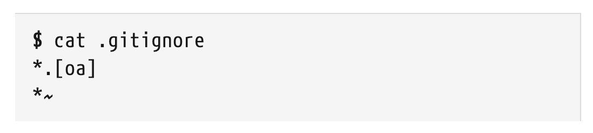
위에 봤듯이 .gitignore란 파일에서 무시할 파일을 기술한다. 위의 예에서는 확장자가 .o로 끝나거나 .a로 끝나는 파일을 무시하겠다는 뜻이다. 파일을 기술하는 패턴이 있는데, 패턴은 아래와 같다.
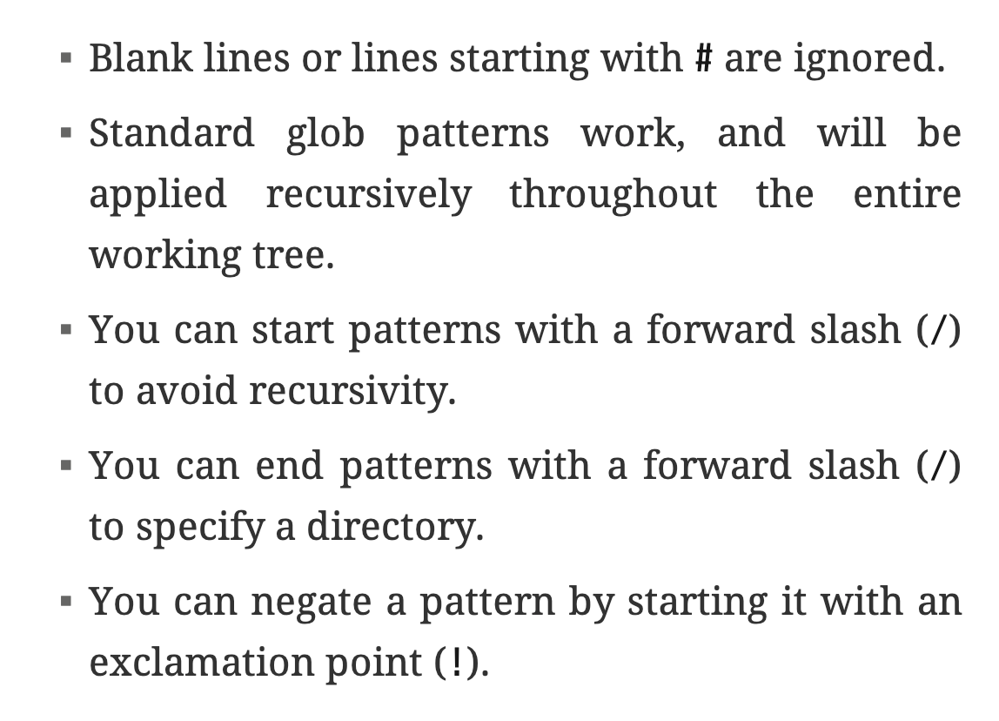
ignore 예제는 다음과 같다.
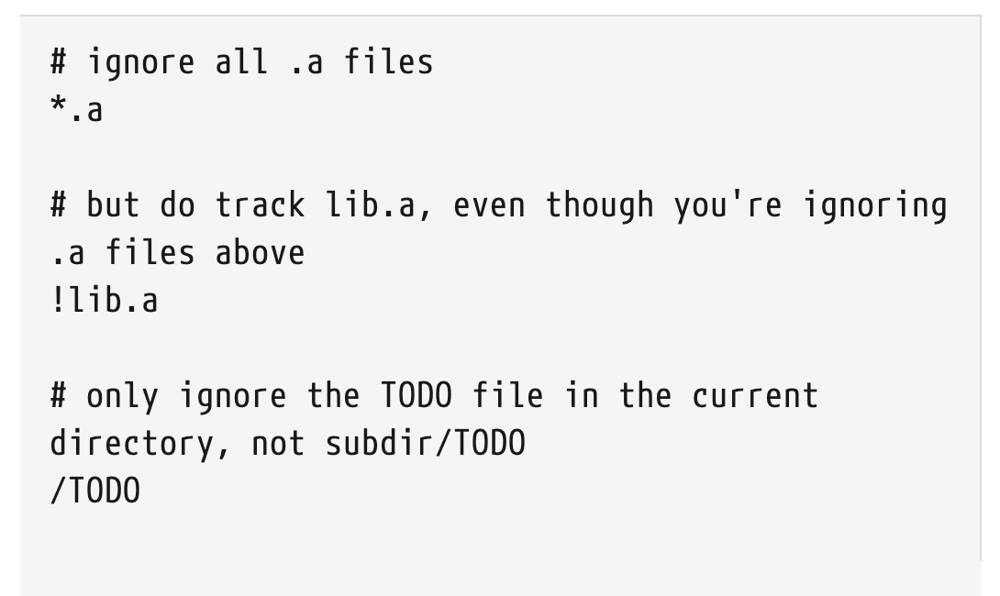
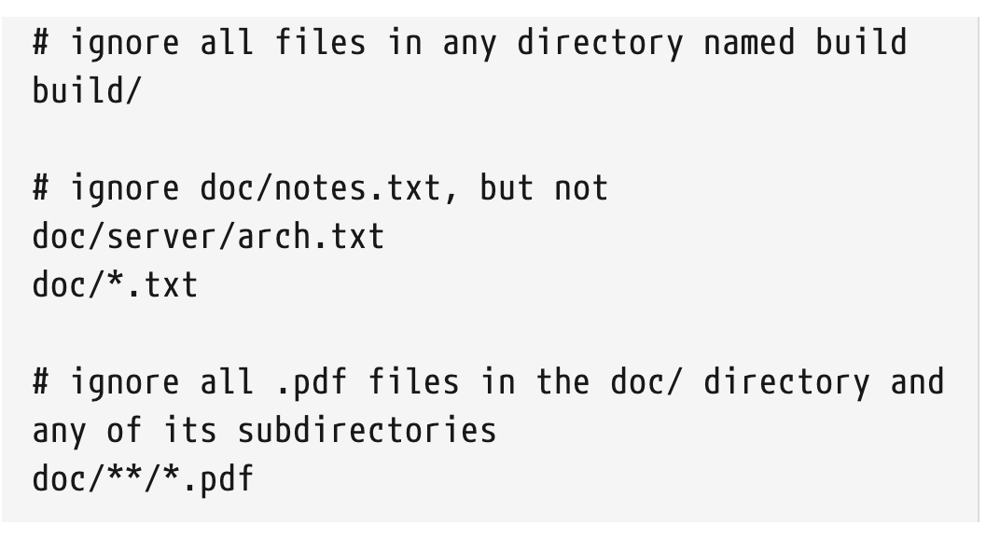
언어별로 ignore할 파일만 모아논 github이 있다. https://github.com/github/gitignore
.gitigonre파일은 project의 root에 단 하나만 있다면, project의 subdirectory에 recursive하게 적용된다. subdirectory마다 .gitignore파일을 둘 수도 있다.
Viewing your staged and unstaged changes [git diff]
git status는 save하기 위해 어떤것들이 추가되었고, 변경되었고, 어떤게 삭제 되었고, 지금 save할려는게 무엇이고… 등을 알려준다. 하지만, 자세하게 알려주진 않는다. 단지 파일이름만 알려준다. 자세히 알기 위해선 git diff를 사용한다.